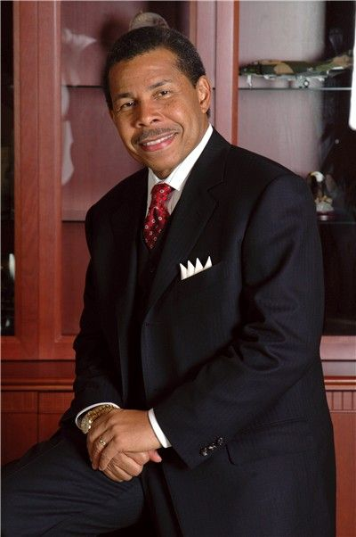
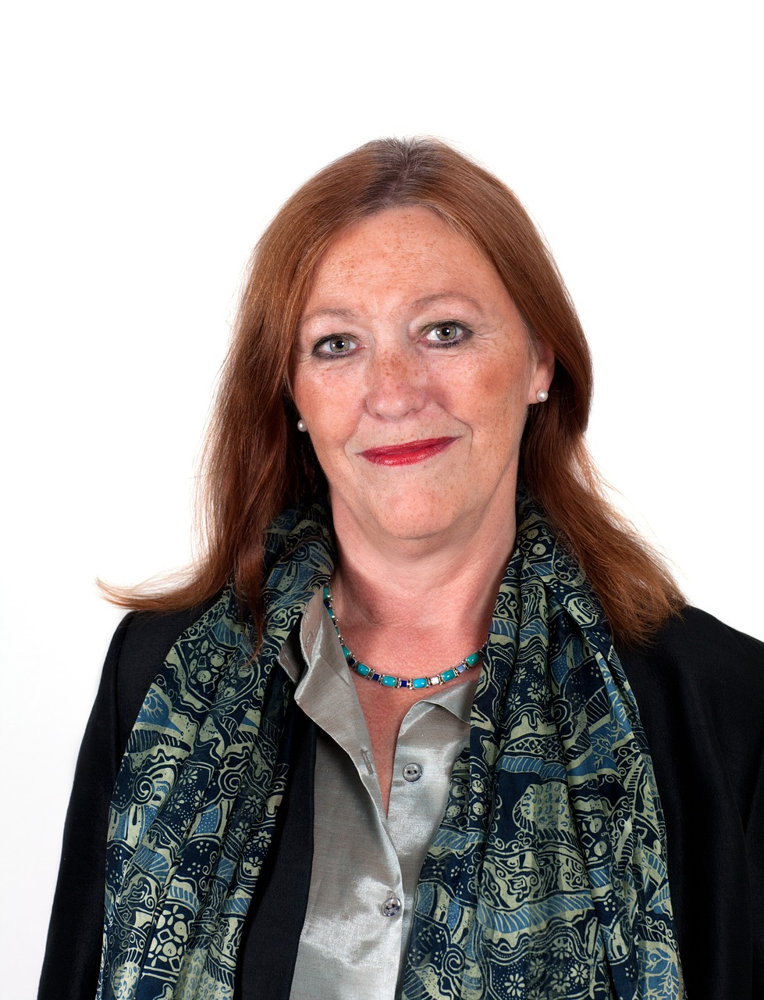
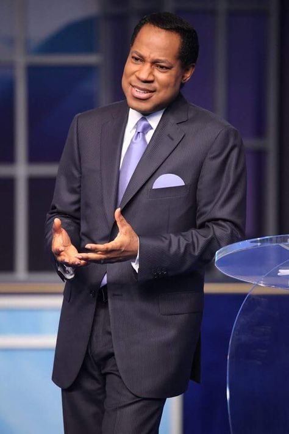
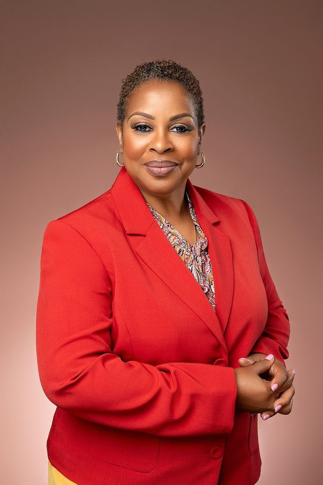

Guest Speakers
Dr. John Maxwell
A world-renowned leadership expert, author, and pastor, Dr. Maxwell will share insights on leading with faith and purpose in a modern world.
Priscilla Shirer
Author, actress, and speaker, Priscilla brings powerful messages about spiritual growth and living a purpose-driven life.
Francis Chan
Known for his passion for God and the Church, Francis will discuss how to live a Christ-centered life in a chaotic world.
Christine Caine
A founder of A21 and Propel Women, Christine will inspire us to fight injustice and embrace our divine calling.
Dr. Ravi Zacharias
Late Christian apologist and theologian, Dr. Zacharias’s teachings on faith and reason will be highlighted through video sessions.
Bishop T.D. Jakes
A charismatic leader and pastor, Bishop Jakes will discuss finding strength and faith through life's challenges.
Lisa Bevere
Author and speaker, Lisa will encourage us to embrace our God-given identity and stand firm in faith.
Tim Keller
Pastor and theologian, Tim will delve into the intersection of faith and culture, inspiring us to live for Christ in today’s society.
Joyce Meyer
A renowned Bible teacher, Joyce will encourage us to trust God and live a life filled with His grace and peace.
Steven Furtick
Founder of Elevation Church, Steven will challenge us to grow in faith and impact the world around us for God’s kingdom.